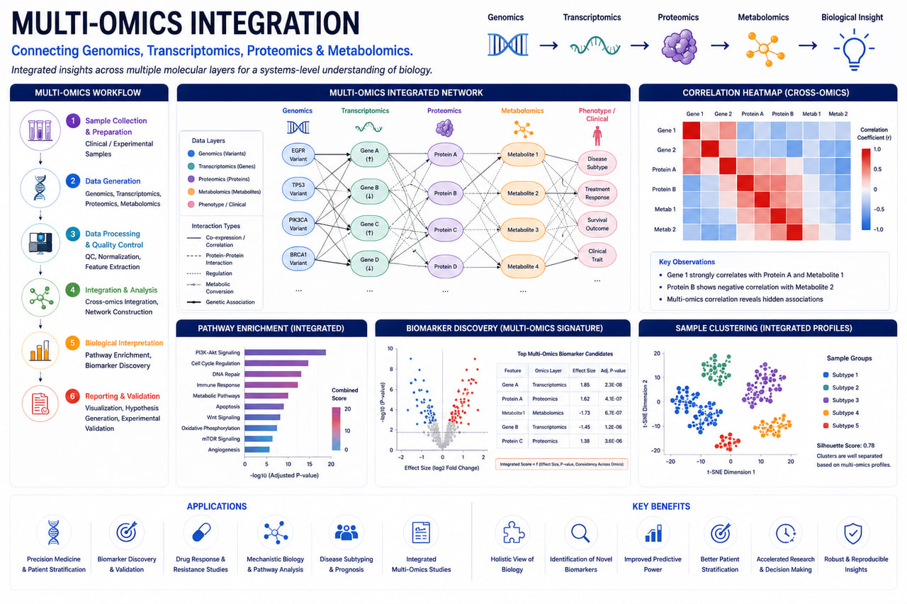

AI-Assisted Bioinformatics
Machine learning-enabled workflows for biomarker discovery, variant prioritization, and predictive genomics.
AI-Powered Multi-Omics Data Integration for Systems Biology, Biomarker Discovery & Precision Medicine

RASA Life Science Informatics provides advanced Multi-Omics Integration services that combine genomics, transcriptomics, epigenomics, proteomics, metabolomics, and clinical data to deliver a comprehensive understanding of complex biological systems and disease mechanisms.
Modern biomedical research generates vast amounts of multi-dimensional data. However, true biological insights emerge when these datasets are integrated and interpreted together. Our AI-powered multi-omics workflows help pharmaceutical companies, biotechnology organizations, hospitals, CROs, and academic researchers uncover molecular interactions, identify biomarkers, discover therapeutic targets, and accelerate precision medicine initiatives.
By integrating multiple biological layers into unified analytical frameworks, we reveal relationships between genes, transcripts, proteins, metabolites, pathways, and phenotypes that remain hidden in single-omics studies.
Connect genetic variation with gene expression profiles to understand disease mechanisms and regulatory processes.
Link gene expression patterns with protein abundance and functional activity.
Investigate how epigenetic modifications influence gene regulation and cellular function.
Combine multiple single-cell datasets for comprehensive cellular characterization.
Integrate molecular and clinical data to support precision medicine and therapeutic discovery.
Patient stratification and personalized therapeutic development.
Identification of diagnostic, prognostic, and predictive biomarkers.
Target identification, pathway analysis, and therapeutic prioritization.
Integrated analysis of genomic, transcriptomic, and epigenomic alterations.
Multi-layer molecular characterization of complex genetic disorders.
Network-based understanding of biological processes and disease mechanisms.
Identification of clinically relevant biomarkers across multiple molecular layers.
Understanding complex disease biology through integrated molecular analysis.
Identification and prioritization of actionable therapeutic targets.
Development of patient-specific molecular signatures.
Network-based interpretation of biological pathways and disease processes.
Machine learning-enabled workflows for biomarker discovery, variant prioritization, and predictive genomics.
Support for Illumina, Oxford Nanopore, PacBio HiFi, and 10x Genomics platforms.
From raw sequencing data to biological interpretation and publication-ready reports.
Deployable on AWS, Google Cloud, HPC clusters, and secure on-premise environments.
Built using Nextflow, Snakemake, Docker, and Singularity for enterprise-grade bioinformatics operations.
Get in touch with our team in Pune, India to discuss sample sizes, platform details, and custom bioinformatics pipeline configurations for your research program.
Start a Project